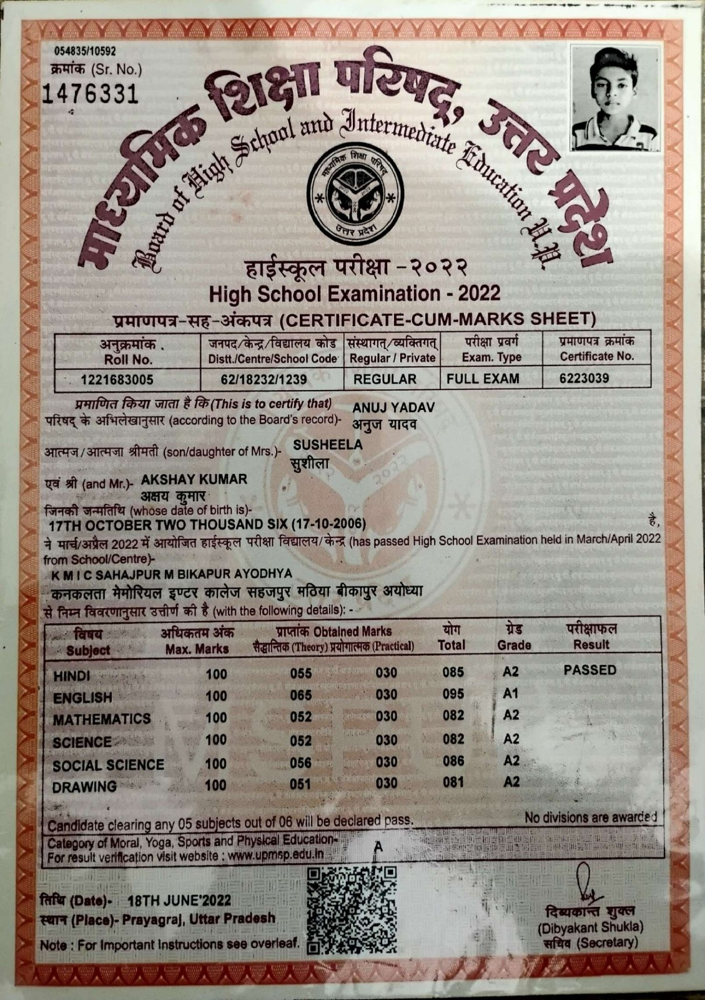
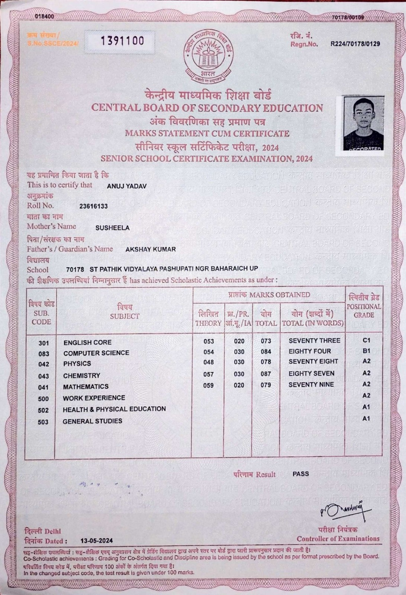
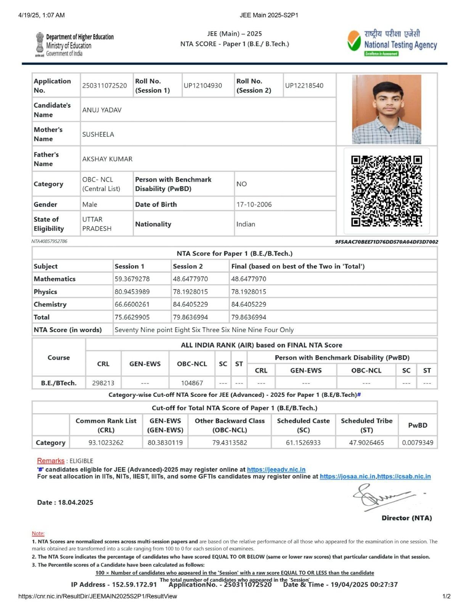

Anuj Yadav

Summery
I am ambitious but a lazy person.In academics, I am an average stusent.
Qualification Details
- I have done my high school from KMIC Ayodhya with 85.17%.
10th Marksheet

- I have passed out 12th class from SPV Bahraich.
12th Marksheet

- I prepared for JEE Mains and Advanced for A year as a dropper.
In Mains,I got 79.86 %ile that is Iwas eligible for JEE Advanced.
I gave JEE Advanced but could not clear.
JEE Main Score Card

- Currently,I am searching for a decent college for pursuing B.Tech. degree with the branch of CSE.
As I am not getting any college in JoSAA and CSAB counsilling.
- Also I am lerning full stack Web Developement course.
Skills
- I have learned Python in class 12th as my elective subject was Computer Science.
- I know DBMS and MySQL.
Projects
- I worked on Railway Management Project based on DBMS(MySQL) and Python.
My Hobbies
Contact Me..
My Instagram Handle